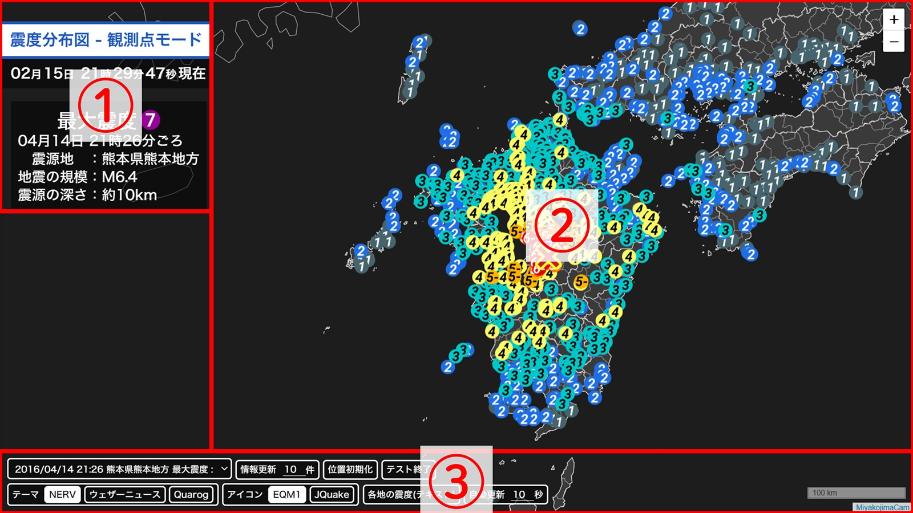
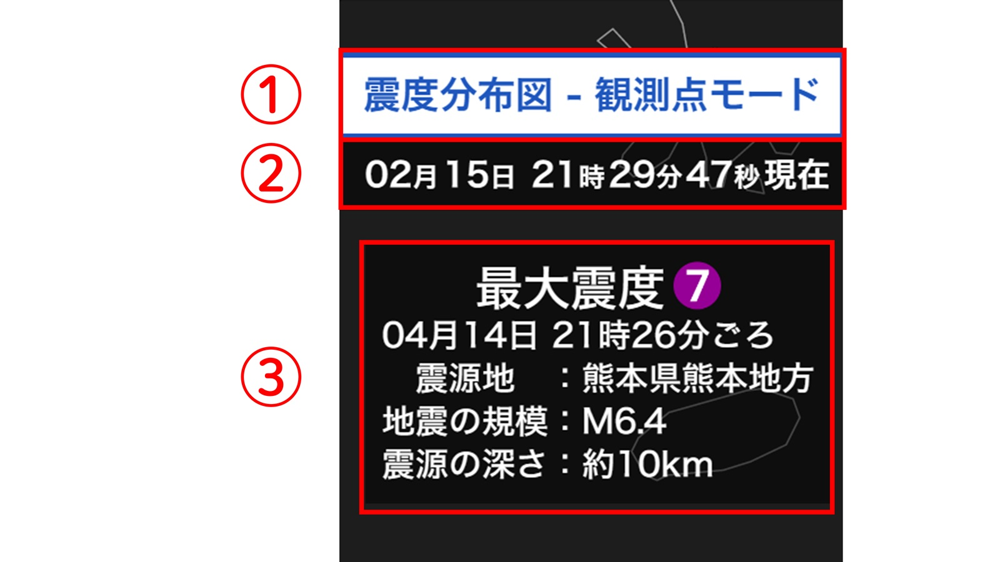
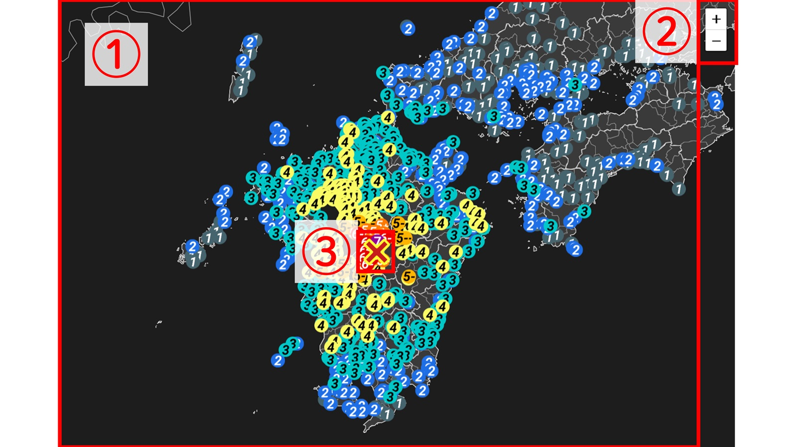
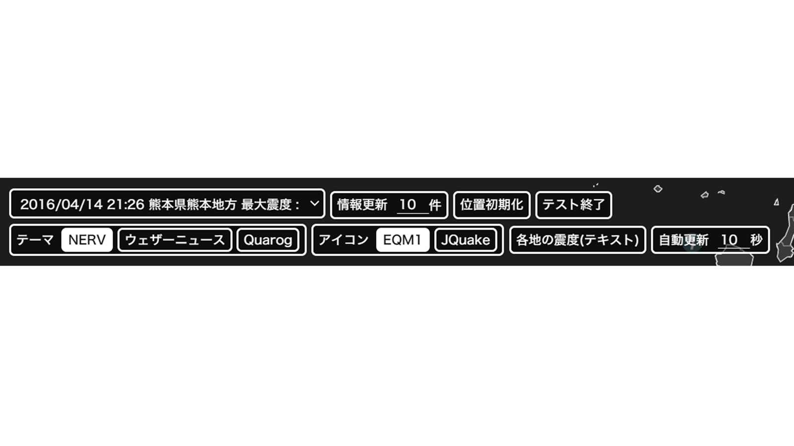

見たい部分の画像領域をクリックすると、該当の解説セクションへ移動します。

画面左上の情報パネルです。赤数字ピンをタップすると詳細が表示されます。

中央の地図表示エリアです。震度観測点や震源地を表示します。

最新の地震情報取得・自動更新を行うコントロール群です。

過去の地震データを詳細条件（日時・震度・Mなど）で検索する機能です。
地図の配色やアイコンデザイン、表示要素のON/OFFを設定します。